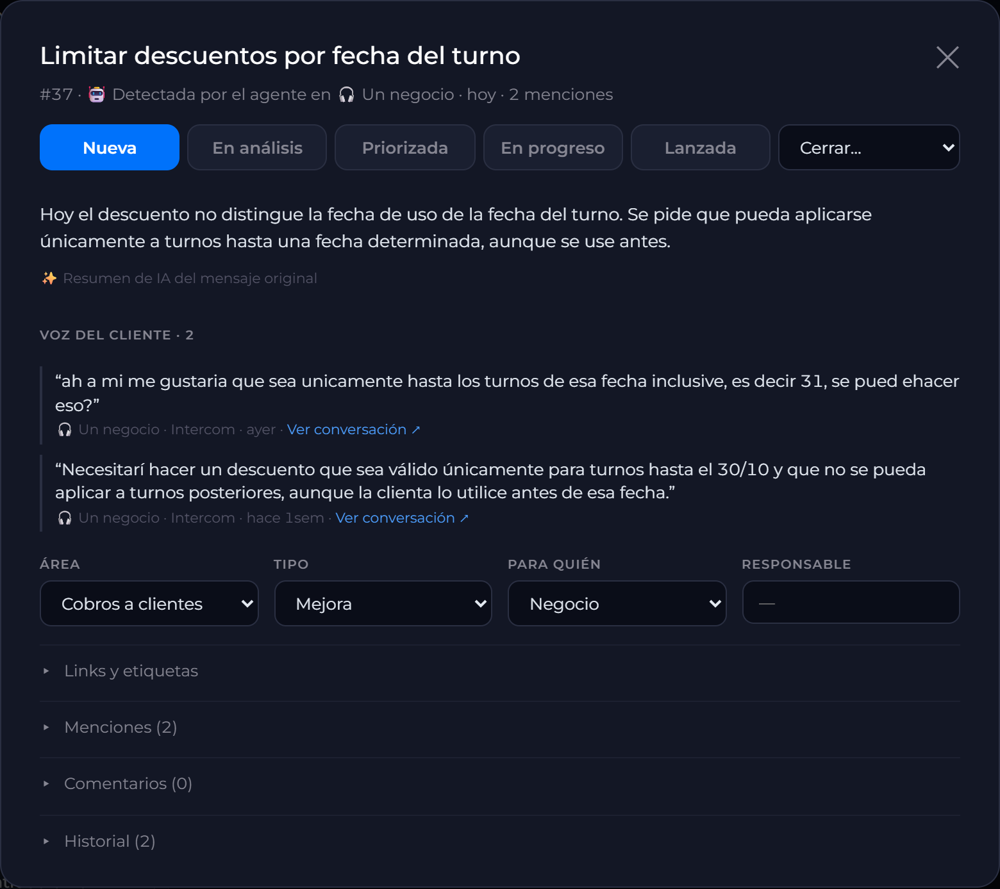
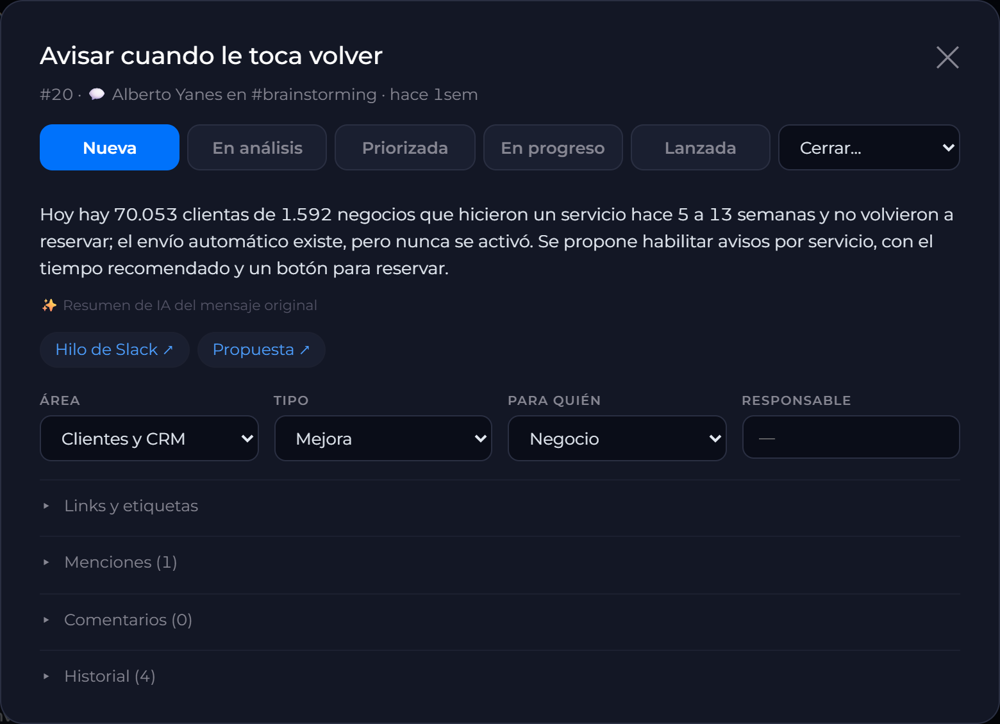
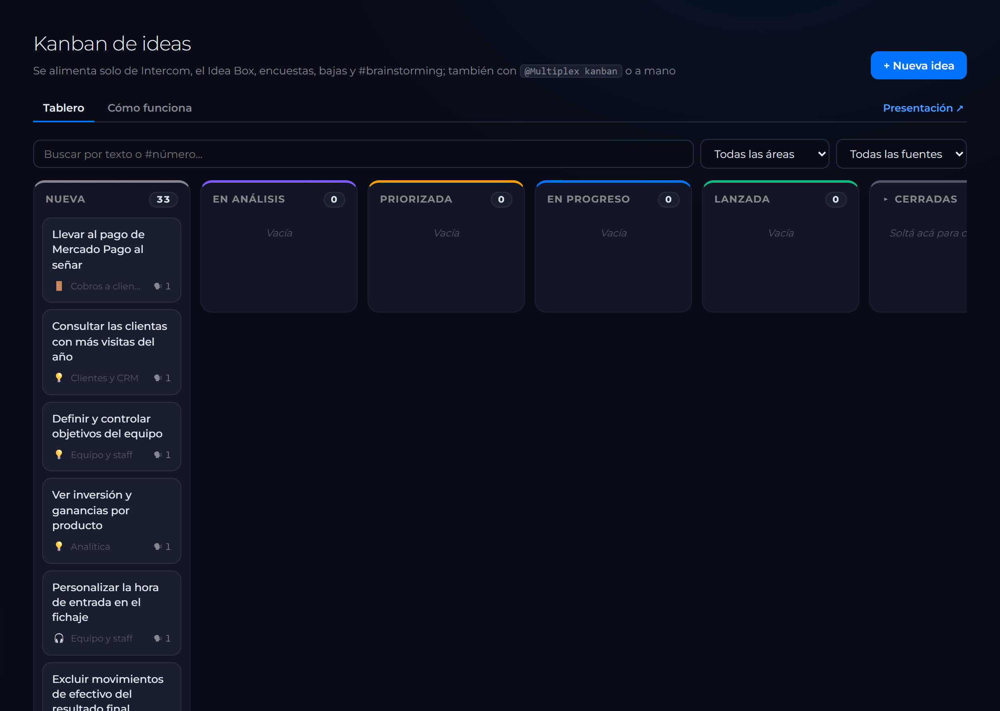

El lugar donde queda cada idea de producto, con las palabras de quien la pidió y en qué estado está. Se alimenta solo.
Las conversaciones de soporte, también las de WhatsApp que entran por ahí.
Cada idea que deja un negocio en la app. Si su topic ya está en el tablero, va directo a esa tarjeta.
Las respuestas de texto.
Lo que escribe el negocio cuando pide la baja.
Los mensajes del equipo que proponen algo. Las respuestas del hilo no.
Corre cada 30 minutos. Si duda, no anota: es preferible perder un pedido a llenar el tablero de ruido. Usa gpt-6-luna por API, no la cuota de Claude.
De noche hace un repaso: vuelve a comparar las ideas entre sí.

Prueba con datos reales del 16 al 30 de octubre, sin escribir en el tablero real. En la captura, el nombre del negocio está oculto.
Respondé @Multiplex kanban en el hilo del mensaje. La idea es el mensaje de arriba del hilo; lo que escribas después del comando queda como nota.
Suelto también sirve: @Multiplex kanban <la idea>
/invite @MultiplexAbrí el topic en Multiplex → Idea Box y tocá «Llevar al Kanban». Si ya está, el botón dice «En Kanban: #N» y te lleva a la tarjeta.
«+ Nueva idea» en el tablero: título, descripción, un link opcional, área, tipo y para quién.
«✨ Completar con IA» ordena la descripción si quedó vaga.
El título se respeta si el mensaje empieza con «Idea:». Si no, lo escribe la IA.
Si ya hay una igual, el bot lo dice en la misma respuesta: «⚠️ Misma idea que #N».
Repetir el comando sobre el mismo mensaje no duplica: contesta con la tarjeta que ya existe.


Una por estado: Nueva, En análisis, Priorizada, En progreso, Lanzada. «Cerradas» queda plegada al costado.
Arrastrá la tarjeta a otra columna. Dentro de una columna, el orden también se guarda. Soltarla en «Cerradas» pregunta cómo se cierra.
Título, de dónde vino (🎧 Intercom · 💡 Idea Box · 📋 Encuesta · 🚪 Baja · 💬 Slack · ✍️ a mano), área, 🗣 N negocios que la pidieron y responsable.
Aparece solo cuando el agente cree que dos tarjetas son la misma idea.
Texto o #número, área, fuente y «⚠ Posible misma idea».
No se va a hacer. Pide escribir por qué.
Es la misma que otra. Se elige la original y las menciones pasan a esa.
Lo que pide ya está en el producto. Conviene anotar dónde.
Resolver una resuelve la otra. Es el único caso que se marca en el tablero.
Mismo tema, otro pedido. No se marca: no pide ninguna acción.
No tienen que ver.
Las dos hablan de mensajes a clientas, pero una es un aviso automático para volver a reservar y la otra, difusiones por segmento. La IA las marcó relacionadas, no la misma: no aparece aviso.
@Multiplex kanban en el hilo.@Multiplex kanban en Slack o «+ Nueva idea».Es una demo con las ideas cargadas hoy: se puede mover y editar, pero los cambios no se guardan.
/invite @Multiplex. Sin eso, el agente no lee ese canal./release-abrir, /release-contenidos): cuándo se vincula una idea, cómo pasa a «Lanzada» y cómo se les avisa a quienes la pidieron.Un antecedente: probamos que el agente cruzara solo los PRs de GitHub con las ideas. De 40 PRs desde el 1/10 no vinculó ninguno y sugirió 1, dudoso: un PR describe el cambio técnico, no el pedido del negocio. Lo sacamos.